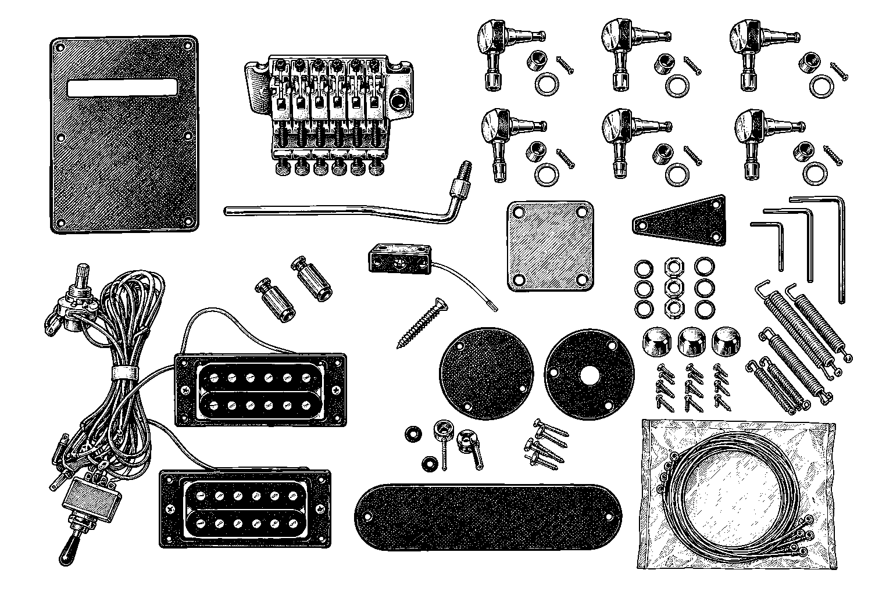
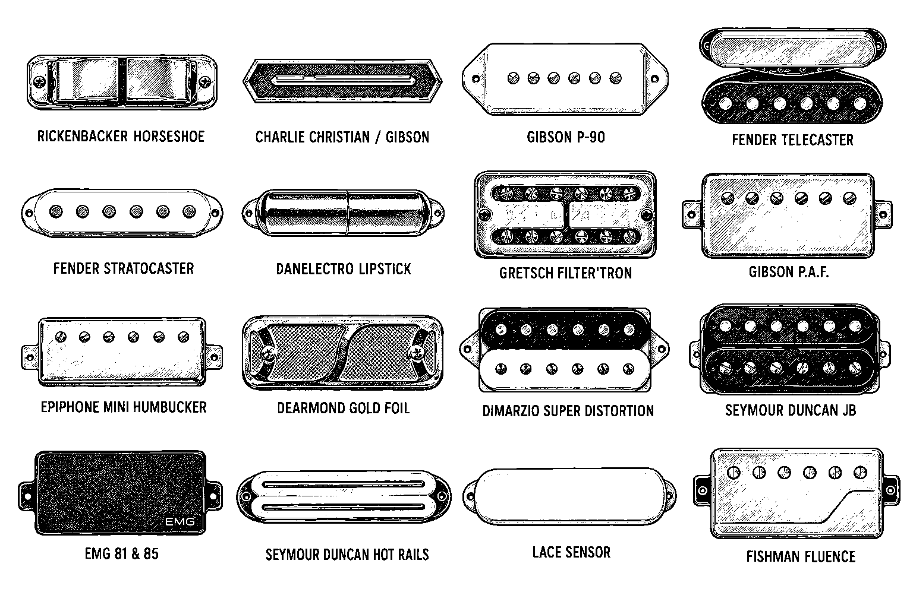
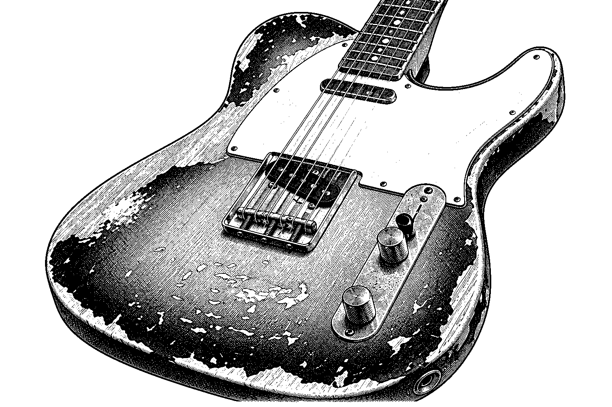
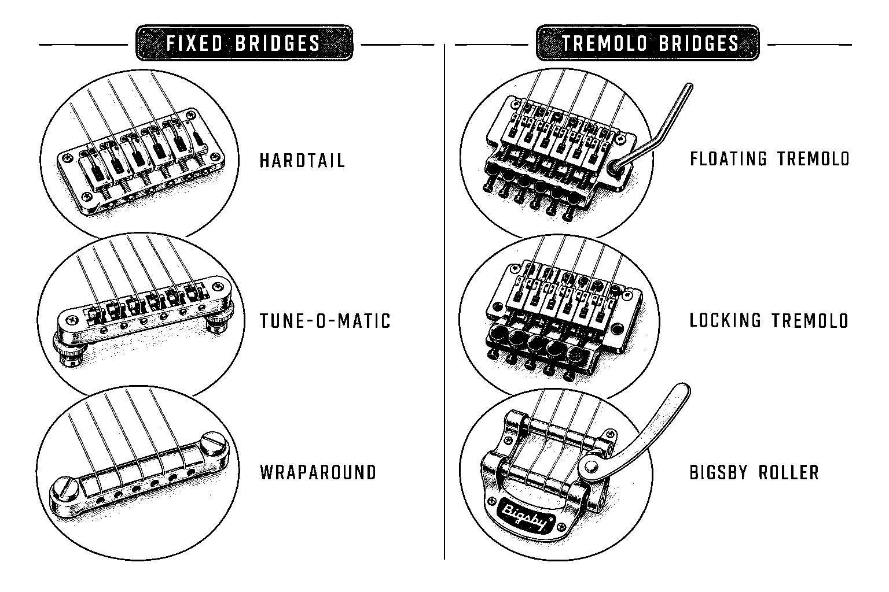
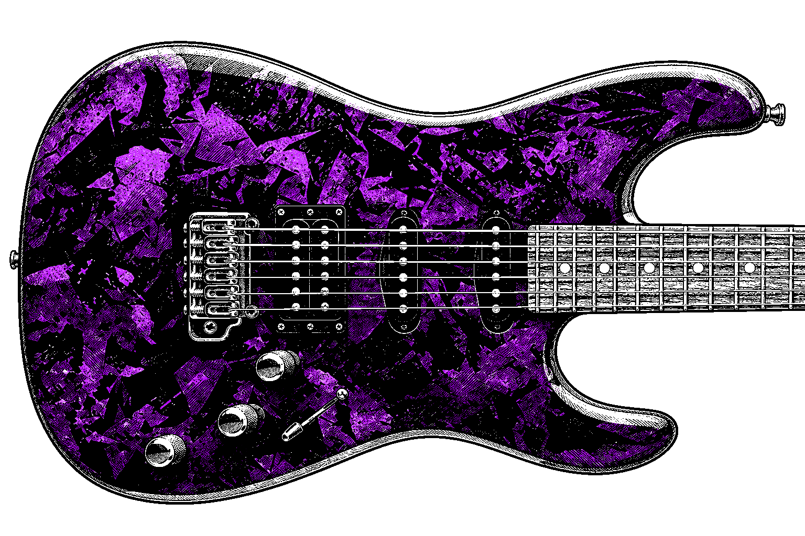
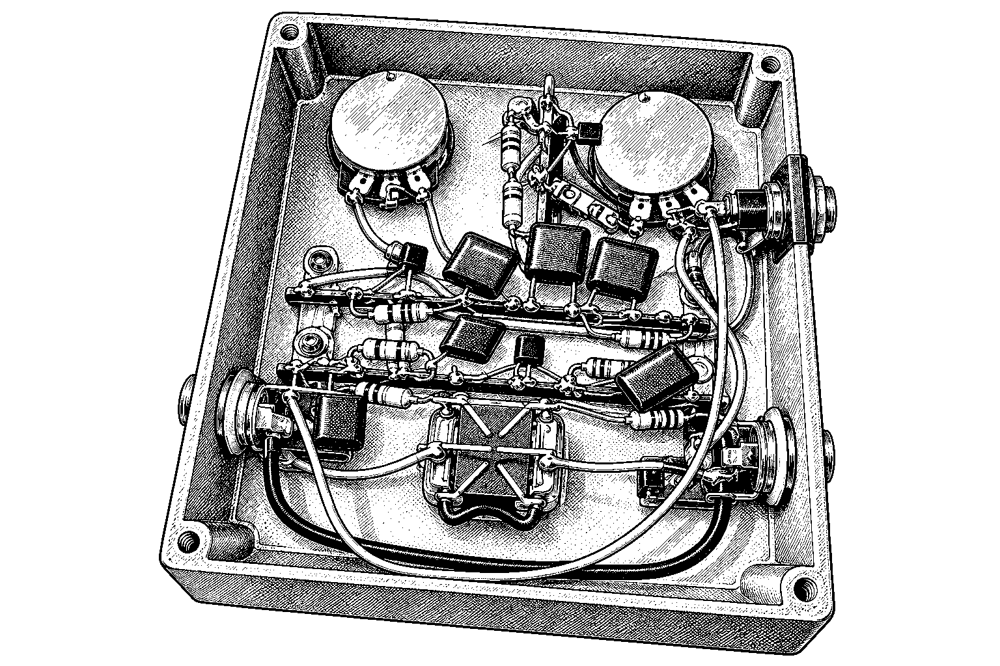
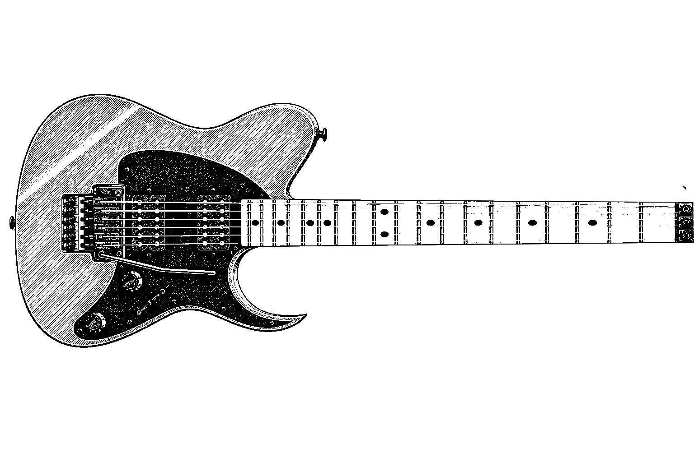

Want your guitar to be more yours? Here's what we can do, with a few ideas for each. Pick one from the list, or scroll on down.
Hey! Got an upright bass?
We ain't scared of those either. Bring 'em on!
- Custom builds & parts
- Pickup swaps & wiring
- Relic & aged finishes
- Tremolo & bridge jobs
- Custom finishes
- Amp & pedal mods
- Lefty conversions
- One-off dream builds
Custom builds & parts

Want a guitar that is built around you instead of a catalog? We can put together a custom guitar from the ground up, picking the neck, body, bridge, tuners, pickups, and controls so every piece fits your hands and your sound. Already got a favorite axe? Upgrading individual parts is a great way to make it feel and sound like yours.
Ideas to get you started
- Assemble a Strat-style or Tele-style guitar from hand-picked parts
- Upgrade tuners, bridge, and knobs on a guitar you already love
- Fit a new neck to an existing body for a different feel
Pickup swaps & wiring

Pickups are the voice of your guitar, and swapping them is the fastest way to change how it sounds. We can drop in a different pickup, rework the wiring, or add switches that let you split a humbucker or change how two pickups team up. You get new tones from the guitar you already play, with clean solder work and a quiet signal.
Ideas to get you started
- Swap a stock single-coil for a hotter humbucker-sized pickup
- Add a coil-split or series/parallel switch to a humbucker
- Rewire a noisy guitar with new pots, switch, and jack
Relic & aged finishes

Love the look of a guitar that has been gigged for decades but do not want to wait that long? A relic finish gives a new guitar the faded color, worn edges, and played-in character of a vintage instrument. We aim for wear that looks like real life, not a cartoon, so your guitar looks road-tested from day one.
Ideas to get you started
- Give a new sunburst body a faded, sun-aged look
- Add edge and body wear to a Tele-style guitar
- Yellow up a clear finish to look like it has aged for decades
Tremolo & bridge jobs

The bridge and tremolo decide how well your guitar stays in tune and how it feels under your picking hand. We can install a new bridge or tremolo, set it floating or flat on the body, and tune the springs and height so dive bombs and gentle vibrato both behave. If a tremolo is fighting you, we can calm it down or swap it for something that suits your playing.
Ideas to get you started
- Install a Strat-style tremolo with a properly cut spring cavity
- Swap a worn bridge for a sturdier or better-sounding one
- Set up a tremolo so it returns to pitch after big bends
Custom finishes

A finish is more than color. It is the first thing people see, and it affects how the guitar feels and ages. We can refinish a body or neck in solid colors, sunbursts, metallic shades, or clear coats that show off the wood, then polish it up until it shines.
Ideas to get you started
- Refinish a body in a bold solid color or metallic
- Spray a classic two-tone or three-tone sunburst
- Strip an old finish and go with a clear, natural look
Amp & pedal mods

Sometimes the fix for your tone is not in the guitar at all. We can look inside your amp or pedal and make it work better for you, from fresh tubes set up correctly to small tweaks that change how it breathes and sounds. Tell us what you wish your rig did, and we will talk through what is safe and worthwhile.
Ideas to get you started
- Swap tubes in an amp and set the bias for a warmer or tighter sound
- Tidy up and refresh the insides of a tired pedal
- Talk through gentle tone tweaks for a favorite amp
Lefty conversions
Got a right-handed guitar that you would rather play lefty? A conversion flips the guitar so it works for a left-handed player. That usually means a nut that matches the new string order, adjusted bridge settings, and moving the controls or strap button where your hands expect them. How much work it takes depends on the guitar, so we will check it over first.
Ideas to get you started
- Convert a right-handed guitar into a true lefty setup
- Cut or fit a new nut so the strings sit right in reverse order
- Reposition the strap button and tweak the controls for a left-handed player
One-off dream builds

This is where your wildest guitar idea turns into a real instrument. Bring us a sketch, a favorite shape, or just a vibe, and we will work with you on woods, hardware, finish, and electronics to make something nobody else owns. Every piece is shaped around how you play.
Ideas to get you started
- Build a guitar around a body shape you drew yourself
- Design a bass or guitar with an unusual pickup and control layout
- Create a matched look with custom finish, inlays, and hardware